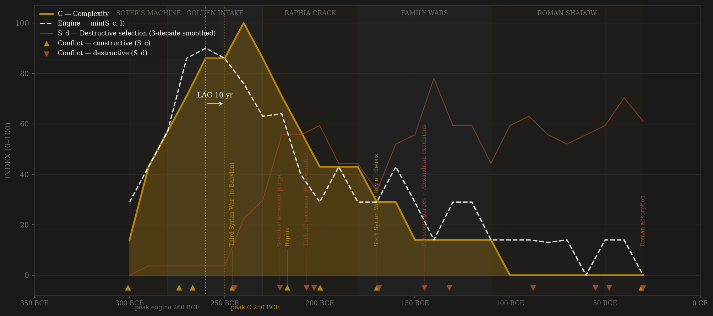
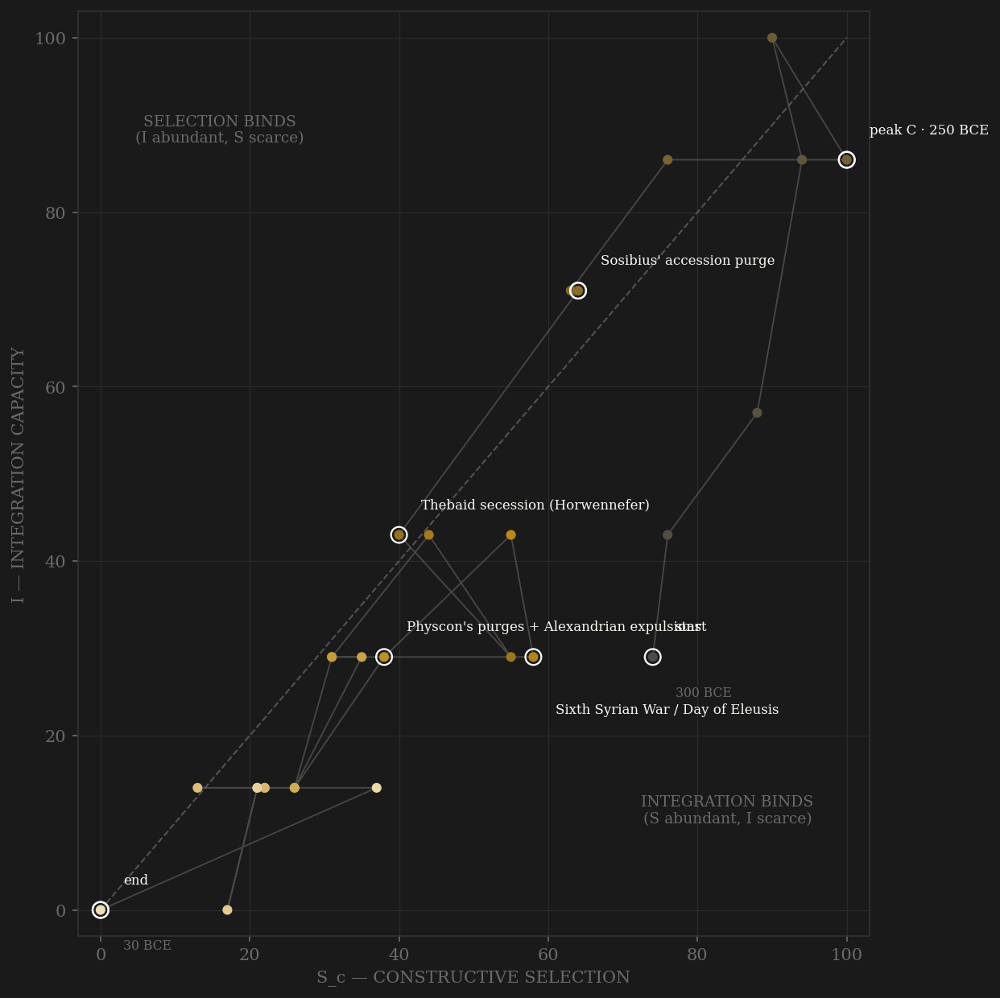

The papyri let this polity be watched at a resolution no other ancient state allows. Soter's machine assembles fast — kleruch land-for-service settlement, the dioiketes bureaucracy, the Museum's salaried competitive intake, a co-opted priestly track — and by the 260s the whole engine is documented in real time: the Zenon archive opens in 261 and shows a Carian Greek climbing from agent to manager of a ten-thousand-aroura estate; the Revenue Laws papyrus of 259 auctions the oil monopoly column by column; Eratosthenes is hired away from Athens. Peak engine sits exactly there, and peak complexity — Alexandria the largest city in the Mediterranean, the Library at maximum, the reclaimed Faiyum in full production — lands one decade later. Then the arc turns on two hinges the ledger dates precisely. Raphia, 217: to beat the Seleucids the crown arms twenty thousand Egyptians, wins the battle, and breaks its own ethnic ceiling — Polybius says the machimoi 'no longer took orders, they sought a leader of their own'; within a decade Upper Egypt has crowned its own pharaohs and is gone for twenty years, and the silver standard collapses into the bronze inflation. And 145-144: Physcon murders his nephew, massacres Alexandrians, and expels the intelligentsia — Aristarchus flees, the scholars scatter, and a grammarian could write that 'Alexandria educated the Greeks' because its refugees now staffed everyone else's schools. That is elite self-amputation performed as a single dated act. The last century is Rome's shadow: the ladder's top rung is sold to a Roman financier — Rabirius Postumus, installed as dioiketes to collect the king's bribe debts — and the terminal absorption of 30 BCE is exogenous decapitation, flagged like Babylon; unlike Babylon, the engine-to-output lag had expressed itself two hundred years before the legions arrived.

The trajectory climbs both axes almost together — the closest thing in the sample to a polity assembling selection and integration in step, which is why the lag is nearly zero. It peaks high on both in the 260s-240s, then does something rarer: it does not slide down one axis first, it staircases down both, each step a dated family atrocity or secession. The 210s drop is the Thebaid secession and the regency lynchings; the 140s-130s drop is Physcon's purge and the civil war. Integration is partially rebuilt twice — the Rosetta-decree settlement after the southern reconquest, the great amnesty of 118 — which shows as the two small rightward hooks on the way down: the royal economy could still be patched by negotiation even when the court could only kill. The path dies in the lower-left corner, both axes near floor, before Octavian arrives — the phase portrait's way of saying the conquest ended an administration, not an engine.
Coded by locus and target, never by outcome. The Ptolemaic ledger's distinctive content is dynastic murder as the house style — Sosibius' accession purge, the stadium lynching of Agathocles, Physcon's massacres and the expulsion of the Museum, a son dismembered and shipped to his mother as a birthday gift — every one aimed at the polity's own coordination machinery, so every one S_d. Against that: six Syrian Wars, the Chremonidean thalassocracy, and Rome's wordless circle in the sand all score as channel B — external discipline, including Actium, fought and lost at the frontier with the home machinery intact (Hannibal rule). Antiochus IV's occupation of Memphis 169-168 is the hard case: the war is B at maximum, but the occupation of the ancient capital is core penetration and carries S_d by the Adrianople rule. The terminal absorption of 30 BCE is exogenous decapitation — the Babylon flag — kept on the ledger but not allowed to masquerade as selection.
| YEAR | CONFLICT | CODE | CODING RATIONALE |
|---|---|---|---|
| 301 BCE | Ipsus / Coele-Syria seized | Sc | Founding Diadoch contest; the prize province taken while the victors quarrel |
| 274 BCE | First Syrian War | Sc | External peer rivalry vs Antiochus I; frontier discipline begins |
| 267 BCE | Chremonidean War | Sc | Thalassocracy vs Macedon — subsidized allies, fleet at maximum reach (Bagnall 1976) |
| 246 BCE | Third Syrian War (to Babylon) | Sc | Deepest strategic reach of the dynasty (Adulis inscription OGIS 54); external contest at peak |
| 245 BCE | Sedition recalling Ptolemy III | Sd | First native tremor — 'domestica seditio' (Justin 27.1) aborts the Asian campaign |
| 221 BCE | Sosibius' accession purge | Sd | Uncle, brother, mother of the king killed (Polyb. 5.34-36) — the family signature opens |
| 217 BCE | Raphia | Sc | Largest Hellenistic battle, won — external B; the 20,000 armed machimoi crack the ethnic ceiling AFTER it (Polyb. 5.107), coded in channel A's decay, not here |
| 207 BCE | Thebaid secession (Horwennefer) | Sd | Internal secession — rival pharaohs crowned at Thebes, Upper Egypt lost 20 years (Véïsse 2004) |
| 203 BCE | Murder of Arsinoe III / lynching of Agathocles | Sd | Palace coup then mob justice in the stadium (Polyb. 15.25-33) — regency machinery devoured |
| 200 BCE | Fifth Syrian War (Panium) | Sc | External; Coele-Syria lost for good — defeat, but locus stays at the frontier |
| 170 BCE | Sixth Syrian War / Day of Eleusis | Sc | Antiochus IV's invasion = B at maximum; Popillius' circle 168 (Polyb. 29.27) opens Rome's shadow — B pressure without war. The Memphis occupation 169-168 itself carries S_d (separate row) |
| 169 BCE | Antiochus IV occupies Memphis | Sd | Core penetration — the ancient capital held by the invader (Adrianople rule); Alexandria's machinery holds and negotiates. Separate ledger row, one arc annotation |
| 145 BCE | Physcon's purges + Alexandrian expulsions | Sd | Nephew murdered, citizens massacred, the Museum gutted 145-144 — scholars scatter to rivals (Athen. 4.184b-c): elite self-amputation showcase |
| 132 BCE | Civil war VIII vs Cleopatra II | Sd | Eight years of dynastic war; Memphites dismembered 130 (Justin 38.8) — the machinery at war with itself |
| 88 BCE | Thebes razed | Sd | The crown annihilates the revolt AND the priestly track's metropolis — 'villages thereafter' (Paus. 1.9.3; Strabo 17.1.46) |
| 55 BCE | Gabinius restores Auletes | Sd | Throne installed by Roman legions for 10,000 talents; Berenice IV executed; Rabirius made dioiketes — the ladder's top rung in foreign receivership |
| 48 BCE | Alexandrian War | Sd | Dynastic civil war fought in the capital's streets; Caesar besieged in the palace quarter |
| 31 BCE | Actium | Sc | The last peer war of the Hellenistic world — fleet committed and lost at the FRONTIER; home machinery unbroken (Hannibal rule) |
| 30 BCE | Roman absorption | Sd | Terminal: suicide, Caesarion killed, Egypt a personal province — exogenous decapitation (Babylon flag; the lag had expressed two centuries earlier) |
| COMPONENT | GRADE | BASIS |
|---|---|---|
| S_c — Constructive (v2 contestability) | ◐ papyri-anchored + coded | A 0.40: kleruch ladder + dioiketes machine (Zenon archive ~1,800 docs — career mobility documented, Pestman 1981; Orrieux 1985) + Museum competitive intake (Fraser 1972 I ch.6) + priestly-scribal parallel track (Thompson 2012) + fiscal-Hellene status by function (P.Count, Clarysse & Thompson 2006). B 0.30 HARD CAP: Syrian Wars I-VI (Grainger 2010), Chremonidean War, Rome's shadow post-168 as pressure-without-war. C 0.30: bloodless regencies, synod bargaining (Canopus OGIS 56, Rosetta OGIS 90), the 118 amnesty (P.Tebt. 5); mob politics scored degenerate-low. No deviation from 0.4/0.3/0.3. Ledger: data/raw/ptolemaic/coding_ledger_v2.csv |
| S_c v1 (frozen comparator) | ○ synthesized | Channel B alone (external-war-only ordinal, min-maxed) — the prior definition's operative content per the straight-to-v2 convention |
| S_d — Destructive | ○ scholar-coded | Dynastic murders (Polyb. 5, 15; Justin 38.8; Diod. 33-34; Athen. 4.184), Thebaid secession 207/6-186 (Véïsse 2004), Thebes 88, terminal absorption 30 (exogenous — Babylon flag) |
| I — Integration | ◐ papyri-anchored | The royal economy: granary-banking network (Manning 2010 ch.5; von Reden 2007), monopolies (P.Rev. 259), closed-currency zone (~305-290s on, the Mediterranean's only), Nile grain logistics (C.Ord.Ptol. 73), Faiyum reclamation (Arsinoite arable ~tripled — Zenon dossier), Red Sea canal/ports (Pithom stele) |
| C — Complexity | ◐ anchored + coded | Alexandria scale (Diod. 17.52.6: 300k free — largest Mediterranean city; Fraser I ch.2); Library/Museum output arc (peak under II-III, gutted 145-144); Faiyum extent (◐); Pharos/Serapeum; grain-transfer banking sophistication |
| E — Entropy | ◐ anchored + coded | Revolt arc (Véïsse 2004 catalogue); THE BRONZE INFLATION ~210-183 (silver standard abandoned ~211/210 — Reekmans 1951, Maresch 1996, von Reden 2007 ◐); Auletes debasement toward ~33% fine (◐ numismatic); attested Nile failures (OGIS 56; Pliny NH 5.58: 5 cubits in 48; famine 48-46) |
| R — Renewal (population, millions) | ○ coded band | ~3.0M → ~4.3M (~200 BCE) → ~3.7M; Rathbone 1990 basis + Clarysse-Thompson extrapolation, Manning 2010 ch.2 discussion; Diodorus 1.31.8 (text disputed) treated as range flag, never a count |
28 decade rows -300..-30 (BCE convention: -220 row carries Raphia 217), built 2026-07-06 straight to S_c v2 by scripts/build_ptolemaic_sicre.py; audit trail in components_audit.csv, per-decade channel rationales in coding_ledger_v2.csv, full source map in SOURCES.md. Sc_v1_combat = channel B alone (external-war-only — the prior definition's operative content), per the straight-to-v2 convention. Frozen-protocol lag (3-decade centered rolling mean, engine = min(Sc,I)) under BOTH definitions: v2 engine -260 → C -250 = +10 SIMULTANEOUS; v1 engine -260 → C -250 = +10 SIMULTANEOUS. Robustness: smoothed C ties EXACTLY at -250 and -240 (Gupta tie precedent — idxmax takes the first); taking the later tied decade gives +20 PASS under both definitions. Unsmoothed: v2 +20 PASS (engine -260 → C -240), v1 +30 PASS (engine -270 → C -240). Every treatment lands in {+10..+30} — engine and output peak within a generation; the verdict of record is the frozen SIMULTANEOUS, the knife-edge stated rather than tie-broken. Carry the ○-halo caveat (scholar-coded polities cluster at SIMULTANEOUS): this composite is papyri-ANCHORED but the peak-decade levels remain coded ordinals; upgrade path to ● exists via the Reekmans/Maresch price tables and P.Count registers, noted in SOURCES.md. Terminal absorption 30 BCE = exogenous decapitation (Babylon flag) — unlike Babylon the lag had fully expressed two centuries before conquest, so the terminal row does not contaminate the peaks. Rebuild: build_ptolemaic_sicre.py, then polity_report.py --slug ptolemaic